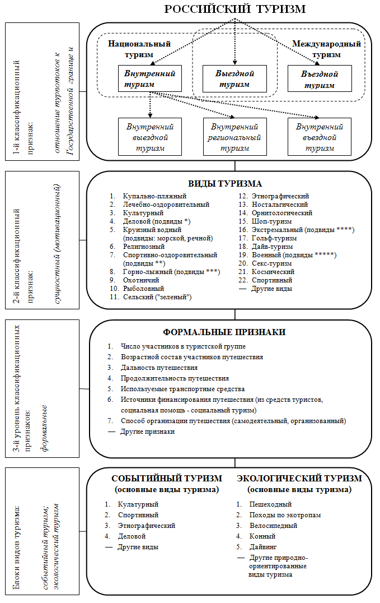

Дополнительный материал:
Х. Монтанер Монтехано «Классы туристической деятельности»
Модуль «Классифицирование туризма»
Классифицирование
явлений, событий, предметов и др. является одним из эффективных способов более
глубокого их изучения. Многие авторы занимались разработкой классификаций
туризма и экскурсий, и сегодня известно не малое их число. Туристские
путешествия классифицировали по различным показателям:
- по целям путешествий;
- по способам передвижения;
- по средствам размещения туристов;
- по срокам и продолжительности путешествий;
- по возрасту участников;
- по числу участников в группе и т.д.
Подобная
дифференциация туризма дает возможность проанализировать каждую из образующих
его граней.
Одной
из последних среди опубликованных классификаций, построенных по данному
принципу, является классификация туризма А.Ю. Александровой (2002).
Классификация туризма (Александрова, 2002)
- По виду используемых природных ресурсов
- Купально-пляжный
- Лечебный
- Экологический
- Горный
- Водный
- По источникам
финансирования
- Коммерческий
- Социальный
- По возрастному
составу участников путешествия
- Туризм пожилых людей
- Туризм лиц среднего возраста
- Молодежный туризм
- По числу
участников путешествия
- Индивидуальный
- Групповой
- По способу
организации путешествия
- Организованный
- Неорганизованный
- По способу
размещения туристов
- Гостиничного типа
- Негостиничного типа
- По видам
используемых транспортных средств
- Автобусный
- Авиационный
- Водный
- Автомобильный
- Железнодорожный
- С использованием прочих видов средств перевозки
- (собачьи упряжки и т.д.)
- По дальности
поездки
- Ближний
- Дальний
- По
продолжительности путешествия
- Краткосрочный
- Среднесрочный
- Долгосрочный
- По ритмичности
туристских потоков
- Сезонный
- Круглогодичный
Анализ
классификации и сравнение ее с предыдущими, представленными другими авторами, позволяют
отметить, что к началу XXI в. произошла значительная диверсификация
туризма в нашей стране за послевоенное время. Возросло число видов туризма,
устойчивое место в классификации занял экологический, религиозный,
экстремальный, военный и др. его виды. В ней нашел отражение коммерческий
характер современного туризма, являющийся основным отличительным его признаком
от туризма советского периода страны.
Иной
подход к построению классификации туризма наблюдается у Г.П. Долженко,
опубликовавшего в 2008 г. еще одну версию классификации российского туризма
(рис. 1).
Рис. 1. Классификация российского туризма (Долженко, 2008)
* подвиды делового туризма:
классические деловые поездки, МИСЕ
** подвиды
спортивно-оздоровительного туризма: пешеходный, горный, водный на гребных
судах, водный парусный, лыжный, велосипедный, спелеотуризм, конный,
авто-мототуризм
*** подвиды
горнолыжного туризма: горные лыжи, сноубординг
**** подвиды
экстремального туризма: каньонинг, горный велосипед, каякинг и др.
***** подвиды
военного туризма: полеты на самолетах, боевые стрельбы, танковые туры и др.
Прежде всего
им были определены три уровня классификационных признаков:
1 –
отношение турпотоков к Государственной границе и границам субъектов Российской
Федерации;
2 –
сущностные (мотивационные) признаки;
3 –
формальные признаки.
Кроме того,
в новой классификации выделены типы, подтипы, виды, подвиды и блоки видов
туризма, включающие в себя ряд видов, относящихся к определенной форме
деятельности. Ими являются два блока - экологического и событийного туризма.
Блок
экологического туризма включает все формы природно-ориентированного туризма,
при которых основной мотивацией туристов является наблюдение и приобщение к
природе: пешеходный, водный, велосипедный, конный, спелеотуризм, сельский
(«зеленый»), дайвинг и др. Технологии их проведения должны соответствовать
принципам экотуризма.
В нашей
стране экологический туризм развит слабо, несмотря на то, что природные условия
для него безграничны. В России пока еще не сформировался потребительский спрос
на туры экотуризма.
Блок
событийного туризма включает в себя туры, связанные с разнообразными значимыми
общественными событиями, а также с редкими природными явлениями, привлекающими
своей уникальностью, экзотичностью, неповторимостью большие массы туристов. Он
включат в себя мероприятия культурного, спортивного, этнографического,
фольклорного, выставочного видов туризма. Г.П. Долженко считает, что к
мероприятиям событийного туризма следует относить только те, которые приносят
какой-либо доход региону .
Событийный
туризм в России пока не является бюджетообразующим ни для одного из регионов
страны. Из крупных мероприятий можно назвать лишь два: Широкую масленицу в
Москве и Авиакосмический салон МАКС.
По настоящему крупное
мероприятие событийного туризма состоится в России в Сочи в 2014 г. – зимняя олимпиада. Подобное событие спортивного
характера является действенным инструментом
формирования позитивного образа страны в мире, косвенно увеличивая въездной
туристский поток. Как считают эксперты ЮНВТО, после проведения XXV летних олимпийских игр в Барселоне в 1992 г.
количество туристов, прибывающих в Испанию со всего мира, в последующие годы возросло более
чем на 30 %.
В
классификациях зафиксирована вся история качественных изменений происходящих в
туризме, характеризующих определенный этап его развития в России. И каждая
новая классификация, в которой отражены эти изменения, является самым верным
для данного временного отрезка детальным разъяснением дефиниции «туризм».
Контрольные
вопросы к модулю «Классифицирование туризма»
1. В чем научное
значение классифицирования туризма?
2. По каким
показателям проводится классификация туристских
путешествий?
3. Дать анализ трем уровням классификационных признаков, предложенных Г.П.
Долженко.
4. Охарактеризовать блоки экологического и событийного туризма в классификации Г.П. Долженко.
5. Назовите классы туристической деятельности по Х. Монтанер Монтехано.